上一章中，我们讲述了描述汇编语言的各种数据结构，本章我们将把汇编指令和一些重要的数据结构写入最后的执行文件中。
总体架构
在有了存储各个指令的数据结构后，我们需要利用词法分析和语法分析，将汇编指令汇编成可执行文件。
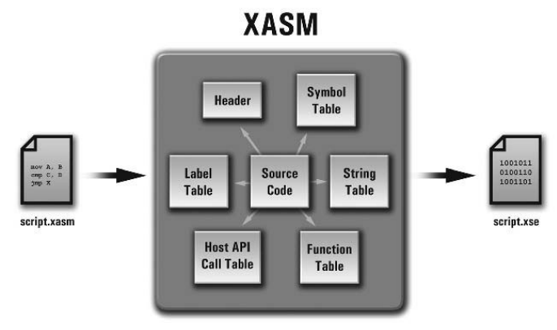
词法分析
汇编器的输入是类似与 Move Y,X 的汇编指令，词法分析要做的工作就是将其切分成一个个的词素：
MOV
Y
,
X
(NEWLINE)那么我们应该怎么切分一条指令语句呢？如果仅仅用空白切分是不够的，因为 Y 和 , 之间是没有空白的，但是它们是两个不同的词素。这里我们可以扩大分隔字符的范围，不仅仅是空白，还可以是其他的单个字符如 [,],{,} 等，这些分隔符就是词素之间区分的标志。
单个字符 Token 如下：
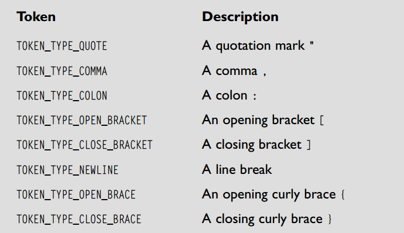
多个字符 Token 如下：
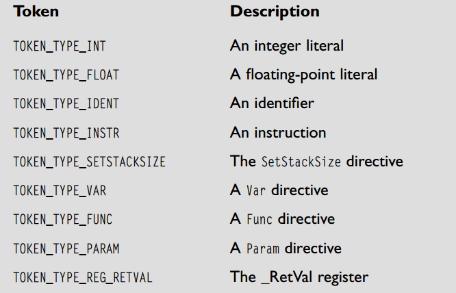
其中 Token 代表该词素的类型，而词素只该 Token 具体的值。
在词法分析过程中，我们会经常用到一些接口函数，比如 GetNextToken(),
GetCurrLexeme(), GetLookAheadChar(),SkipToNextLine(), and ResetLexer() .
其中 GetLookAheadChar() 主要用于解决解析 Var MyVar 和 Var MyVar[256] 时存在不确定性，只有当我们向前看一个字符时，才能确定当前声明的是变量还是数组。
实现
首先我们应该对源代码进行一些清理，如去掉注释和前后空白，所以需要 StripComments 和 TrimWhitespace 函数。
在扫描源代码时，需要记录当前的 Token 起始位置，可以用两个指针实现，如下图所示：
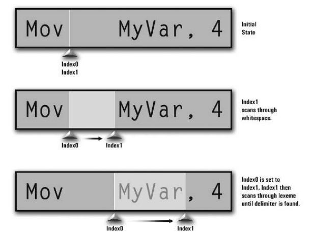
index0 和 index1 跳过空白，index0 指向第一个字符，index1 不断扫描直到遇到下一个 Token 时停止。
值得注意的是，由于我们允许转义字符，所以在扫描字符串时，需要注意判断当前是否在字符串中的方法。
/******************************************************************************************
*
* GetNextToken ()
*
* Extracts and returns the next token from the character stream. Also makes a copy of
* the current lexeme for use with GetCurrLexeme ().
*/
Token GetNextToken ()
{
// ---- Lexeme Extraction
// Move the first index (Index0) past the end of the last token, which is marked
// by the second index (Index1).
g_Lexer.iIndex0 = g_Lexer.iIndex1;
// Make sure we aren't past the end of the current line. If a string is 8 characters long,
// it's indexed from 0 to 7; therefore, indices 8 and beyond lie outside of the string and
// require us to move to the next line. This is why I use >= for the comparison rather
// than >. The value returned by strlen () is always one greater than the last valid
// character index.
if ( g_Lexer.iIndex0 >= strlen ( g_ppstrSourceCode [ g_Lexer.iCurrSourceLine ] ) )
{
// If so, skip to the next line but make sure we don't go past the end of the file.
// SkipToNextLine () will return FALSE if we hit the end of the file, which is
// the end of the token stream.
if ( ! SkipToNextLine () )
return END_OF_TOKEN_STREAM;
}
// If we just ended a string, tell the lexer to stop lexing
// strings and return to the normal state
if ( g_Lexer.iCurrLexState == LEX_STATE_END_STRING )
g_Lexer.iCurrLexState = LEX_STATE_NO_STRING;
// Scan through the potential whitespace preceding the next lexeme, but ONLY if we're
// not currently parsing a string lexeme (since strings can contain arbitrary whitespace
// which must be preserved).
if ( g_Lexer.iCurrLexState != LEX_STATE_IN_STRING )
{
// Scan through the whitespace and check for the end of the line
while ( TRUE )
{
// If the current character is not whitespace, exit the loop because the lexeme
// is starting.
if ( ! IsCharWhitespace ( g_ppstrSourceCode [ g_Lexer.iCurrSourceLine ][ g_Lexer.iIndex0 ] ) )
break;
// It is whitespace, however, so move to the next character and continue scanning
++ g_Lexer.iIndex0;
}
}
// Bring the second index (Index1) to the lexeme's starting character, which is marked by
// the first index (Index0)
g_Lexer.iIndex1 = g_Lexer.iIndex0;
// Scan through the lexeme until a delimiter is hit, incrementing Index1 each time
while ( TRUE )
{
// Are we currently scanning through a string?
if ( g_Lexer.iCurrLexState == LEX_STATE_IN_STRING )
{
// If we're at the end of the line, return an invalid token since the string has no
// ending double-quote on the line
if ( g_Lexer.iIndex1 >= strlen ( g_ppstrSourceCode [ g_Lexer.iCurrSourceLine ] ) )
{
g_Lexer.CurrToken = TOKEN_TYPE_INVALID;
return g_Lexer.CurrToken;
}
// If the current character is a backslash, move ahead two characters to skip the
// escape sequence and jump to the next iteration of the loop
if ( g_ppstrSourceCode [ g_Lexer.iCurrSourceLine ][ g_Lexer.iIndex1 ] == '\\' )
{
g_Lexer.iIndex1 += 2;
continue;
}
// If the current character isn't a double-quote, move to the next, otherwise exit
// the loop, because the string has ended.
if ( g_ppstrSourceCode [ g_Lexer.iCurrSourceLine ][ g_Lexer.iIndex1 ] == '"' )
break;
++ g_Lexer.iIndex1;
}
// We are not currently scanning through a string
else
{
// If we're at the end of the line, the lexeme has ended so exit the loop
if ( g_Lexer.iIndex1 >= strlen ( g_ppstrSourceCode [ g_Lexer.iCurrSourceLine ] ) )
break;
// If the current character isn't a delimiter, move to the next, otherwise exit the loop
if ( IsCharDelimiter ( g_ppstrSourceCode [ g_Lexer.iCurrSourceLine ][ g_Lexer.iIndex1 ] ) )
break;
++ g_Lexer.iIndex1;
}
}
// Single-character lexemes will appear to be zero characters at this point (since Index1
// will equal Index0), so move Index1 over by one to give it some noticable width
if ( g_Lexer.iIndex1 - g_Lexer.iIndex0 == 0 )
++ g_Lexer.iIndex1;
// The lexeme has been isolated and lies between Index0 and Index1 (inclusive), so make a local
// copy for the lexer
unsigned int iCurrDestIndex = 0;
for ( unsigned int iCurrSourceIndex = g_Lexer.iIndex0; iCurrSourceIndex < g_Lexer.iIndex1; ++ iCurrSourceIndex )
{
// If we're parsing a string, check for escape sequences and just copy the character after
// the backslash
if ( g_Lexer.iCurrLexState == LEX_STATE_IN_STRING )
if ( g_ppstrSourceCode [ g_Lexer.iCurrSourceLine ][ iCurrSourceIndex ] == '\\' )
++ iCurrSourceIndex;
// Copy the character from the source line to the lexeme
g_Lexer.pstrCurrLexeme [ iCurrDestIndex ] = g_ppstrSourceCode [ g_Lexer.iCurrSourceLine ][ iCurrSourceIndex ];
// Advance the destination index
++ iCurrDestIndex;
}
// Set the null terminator
g_Lexer.pstrCurrLexeme [ iCurrDestIndex ] = '\0';
// Convert it to uppercase if it's not a string
if ( g_Lexer.iCurrLexState != LEX_STATE_IN_STRING )
_strupr ( g_Lexer.pstrCurrLexeme );
// ---- Token Identification
// Let's find out what sort of token our new lexeme is
// We'll set the type to invalid now just in case the lexer doesn't match any
// token types
g_Lexer.CurrToken = TOKEN_TYPE_INVALID;
// The first case is the easiest-- if the string lexeme state is active, we know we're
// dealing with a string token. However, if the string is the double-quote sign, it
// means we've read an empty string and should return a double-quote instead
if ( strlen ( g_Lexer.pstrCurrLexeme ) > 1 || g_Lexer.pstrCurrLexeme [ 0 ] != '"' )
{
if ( g_Lexer.iCurrLexState == LEX_STATE_IN_STRING )
{
g_Lexer.CurrToken = TOKEN_TYPE_STRING;
return TOKEN_TYPE_STRING;
}
}
// Now let's check for the single-character tokens
if ( strlen ( g_Lexer.pstrCurrLexeme ) == 1 )
{
switch ( g_Lexer.pstrCurrLexeme [ 0 ] )
{
// Double-Quote
case '"':
// If a quote is read, advance the lexing state so that strings are lexed
// properly
switch ( g_Lexer.iCurrLexState )
{
// If we're not lexing strings, tell the lexer we're now
// in a string
case LEX_STATE_NO_STRING:
g_Lexer.iCurrLexState = LEX_STATE_IN_STRING;
break;
// If we're in a string, tell the lexer we just ended a string
case LEX_STATE_IN_STRING:
g_Lexer.iCurrLexState = LEX_STATE_END_STRING;
break;
}
g_Lexer.CurrToken = TOKEN_TYPE_QUOTE;
break;
// Comma
case ',':
g_Lexer.CurrToken = TOKEN_TYPE_COMMA;
break;
// Colon
case ':':
g_Lexer.CurrToken = TOKEN_TYPE_COLON;
break;
// Opening Bracket
case '[':
g_Lexer.CurrToken = TOKEN_TYPE_OPEN_BRACKET;
break;
// Closing Bracket
case ']':
g_Lexer.CurrToken = TOKEN_TYPE_CLOSE_BRACKET;
break;
// Opening Brace
case '{':
g_Lexer.CurrToken = TOKEN_TYPE_OPEN_BRACE;
break;
// Closing Brace
case '}':
g_Lexer.CurrToken = TOKEN_TYPE_CLOSE_BRACE;
break;
// Newline
case '\n':
g_Lexer.CurrToken = TOKEN_TYPE_NEWLINE;
break;
}
}
// Now let's check for the multi-character tokens
// Is it an integer?
if ( IsStringInteger ( g_Lexer.pstrCurrLexeme ) )
g_Lexer.CurrToken = TOKEN_TYPE_INT;
// Is it a float?
if ( IsStringFloat ( g_Lexer.pstrCurrLexeme ) )
g_Lexer.CurrToken = TOKEN_TYPE_FLOAT;
// Is it an identifier (which may also be a line label or instruction)?
if ( IsStringIdent ( g_Lexer.pstrCurrLexeme ) )
g_Lexer.CurrToken = TOKEN_TYPE_IDENT;
// Check for directives or _RetVal
// Is it SetStackSize?
if ( strcmp ( g_Lexer.pstrCurrLexeme, "SETSTACKSIZE" ) == 0 )
g_Lexer.CurrToken = TOKEN_TYPE_SETSTACKSIZE;
// Is it Var/Var []?
if ( strcmp ( g_Lexer.pstrCurrLexeme, "VAR" ) == 0 )
g_Lexer.CurrToken = TOKEN_TYPE_VAR;
// Is it Func?
if ( strcmp ( g_Lexer.pstrCurrLexeme, "FUNC" ) == 0 )
g_Lexer.CurrToken = TOKEN_TYPE_FUNC;
// Is it Param?
if ( strcmp ( g_Lexer.pstrCurrLexeme, "PARAM" ) == 0 )
g_Lexer.CurrToken =TOKEN_TYPE_PARAM;
// Is it _RetVal?
if ( strcmp ( g_Lexer.pstrCurrLexeme, "_RETVAL" ) == 0 )
g_Lexer.CurrToken = TOKEN_TYPE_REG_RETVAL;
// Is it an instruction?
InstrLookup Instr;
if ( GetInstrByMnemonic ( g_Lexer.pstrCurrLexeme, & Instr ) )
g_Lexer.CurrToken = TOKEN_TYPE_INSTR;
return g_Lexer.CurrToken;
}词法分析一般用正则语言描述，通过状态机实现
错误处理
编写代码难免有错误，编译器应该有能力指出错误，错误处理包含三个方面：
dectection,resynchroization and message output. 在这里为了简化，我们不会 重新同步 ，只要发现错误立即打印并终止编译。涉及到的函数如下：
void ExitOnError ( char * pstrErrorMssg )
{
// Print the message
printf ( "Fatal Error: %s.\n", pstrErrorMssg );
// Exit the program
Exit ();
}
void ExitOnCodeError ( char * pstrErrorMssg )
{
// Print the message
printf ( "Error: %s.\n\n", pstrErrorMssg );
printf ( "Line %d\n", g_Lexer.iCurrSourceLine );
// Reduce all of the source line's spaces to tabs so it takes less
// space and so the caret lines up with the current token properly
char pstrSourceLine [ MAX_SOURCE_LINE_SIZE ];
strcpy ( pstrSourceLine, g_ppstrSourceCode [ g_Lexer.iCurrSourceLine ] );
// Loop through each character and replace tabs with spaces
for ( unsigned int iCurrCharIndex = 0;
iCurrCharIndex < strlen ( pstrSourceLine ); ++ iCurrCharIndex )
if ( pstrSourceLine [ iCurrCharIndex ] == '\t' )
pstrSourceLine [ iCurrCharIndex ] = ' ';
// Print the offending source line
printf ( "%s", pstrSourceLine );
// Print a caret at the start of the (presumably) offending lexeme
for ( unsigned int iCurrSpace = 0; iCurrSpace < g_Lexer.iIndex0;
++ iCurrSpace )
printf ( " " );
printf ( "^\n" );
// Print message indicating that the script could not be assembled
printf ( "Could not assemble %s.\n", g_pstrExecFilename );
// Exit the program
Exit ();
}
void ExitOnCharExpectedError ( char cChar )
{
// Create an error message based on the character
char * pstrErrorMssg = ( char * ) malloc ( strlen ( "' ' expected" ) );
sprintf ( pstrErrorMssg, "'%c' expected", cChar );
// Exit on the code error
ExitOnCodeError ( pstrErrorMssg );
}语法分析（Parsing）
完成词法分析后，接下来将进行语法分析，语法分析一般采用两种方法：自底向上和自顶向下。这里采用类似与 递归下降 的方法解析语句，由于 XASM 汇编语言比较简单，我们的语法分析中没有 递归 的调用。
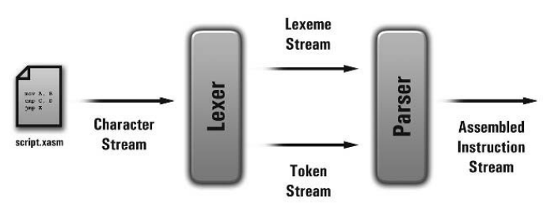
初始化分析器
首先初始化一些标志位和变量。
// ---- Initialize the script header
g_ScriptHeader.iStackSize = 0;
g_ScriptHeader.iIsMainFuncPresent = FALSE;
// ---- Set some initial variables
g_iInstrStreamSize = 0;
g_iIsSetStackSizeFound = FALSE;
g_ScriptHeader.iGlobalDataSize = 0;
// Set the current function's flags and variables
int iIsFuncActive = FALSE;
FuncNode * pCurrFunc;
int iCurrFuncIndex;
char pstrCurrFuncName [ MAX_IDENT_SIZE ];
int iCurrFuncParamCount = 0;
int iCurrFuncLocalDataSize = 0;
// Create an instruction definition structure to hold instruction information
// when dealing with instructions.
InstrLookup CurrInstr;
// Reset the lexer
ResetLexer ();解析指令
SetStackSize
SetStackSize 1024
case TOKEN_TYPE_SETSTACKSIZE:
// SetStackSize can only be found in the global scope, so make sure we
// aren't in a function.
if ( iIsFuncActive )
ExitOnCodeError ( ERROR_MSSG_LOCAL_SETSTACKSIZE );
// It can only be found once, so make sure we haven't already found it
if ( g_iIsSetStackSizeFound )
ExitOnCodeError ( ERROR_MSSG_MULTIPLE_SETSTACKSIZES );
// Read the next lexeme, which should contain the stack size
if ( GetNextToken () != TOKEN_TYPE_INT )
ExitOnCodeError ( ERROR_MSSG_INVALID_STACK_SIZE );
// Convert the lexeme to an integer value from its string
// representation and store it in the script header
g_ScriptHeader.iStackSize = atoi ( GetCurrLexeme () );
// Mark the presence of SetStackSize for future encounters
g_iIsSetStackSizeFound = TRUE;
break;Func
Func MovePlayer
{对应的 Token
TOKEN_TYPE_FUNC
TOKEN_TYPE_IDENT
TOKEN_TYPE_NEWLINE
TOKEN_TYPE_OPEN_BRACE在函数分析中，主要处理函数入口、设置 iIsFuncAative 标志位、设置函数索引、函数参数数量、函数局部变量数量、是否是主函数以及添加返回指令。
case TOKEN_TYPE_FUNC:
{
// First make sure we aren't in a function already, since nested functions
// are illegal
if ( iIsFuncActive )
ExitOnCodeError ( ERROR_MSSG_NESTED_FUNC );
// Read the next lexeme, which is the function name
if ( GetNextToken () != TOKEN_TYPE_IDENT )
ExitOnCodeError ( ERROR_MSSG_IDENT_EXPECTED );
char * pstrFuncName = GetCurrLexeme ();
// Calculate the function's entry point, which is the instruction
// immediately following the current one, which is in turn equal to the
// instruction stream size
int iEntryPoint = g_iInstrStreamSize;
// Try adding it to the function table, and print an error if it's already
// been declared
int iFuncIndex = AddFunc ( pstrFuncName, iEntryPoint );
if ( iFuncIndex == -1 )
ExitOnCodeError ( ERROR_MSSG_FUNC_REDEFINITION );
// Is this the _Main () function?
if ( strcmp ( pstrFuncName, MAIN_FUNC_NAME ) == 0 )
{
g_ScriptHeader.iIsMainFuncPresent = TRUE;
g_ScriptHeader.iMainFuncIndex = iFuncIndex;
}
// Set the function flag to true for any future encounters and
// reinitialize function tracking variables
iIsFuncActive = TRUE;
strcpy ( pstrCurrFuncName, pstrFuncName );
iCurrFuncIndex = iFuncIndex;
iCurrFuncParamCount = 0;
iCurrFuncLocalDataSize = 0;
// Read any number of line breaks until the opening brace is found
while ( GetNextToken () == TOKEN_TYPE_NEWLINE );
// Make sure the lexeme was an opening brace
if ( g_Lexer.CurrToken != TOKEN_TYPE_OPEN_BRACE )
ExitOnCharExpectedError ( '{' );
// All functions are automatically appended with Ret, so increment the
// required size of the instruction stream
++ g_iInstrStreamSize;
break;
}注意函数返回语句 Ret
当匹配到函数结束符时，写入函数参数数量、局部变量数量同时设置iIsFuncAative 标志位。
case TOKEN_TYPE_CLOSE_BRACE:
// This should be closing a function, so make sure we're in one
if ( ! iIsFuncActive )
ExitOnCharExpectedError ( '}' );
// Set the fields we've collected
SetFuncInfo ( pstrCurrFuncName, iCurrFuncParamCount,
iCurrFuncLocalDataSize );
// Close the function
iIsFuncActive = FALSE;
break;Var/Var []
由于变量和数组前面部分是一样的，所以需要向前看符号确定是否是数组。
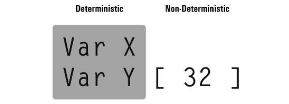
另一方面变量分为本地变量和全局变量，同时我们为每个栈帧保留了一个元素，以供虚拟机使用。
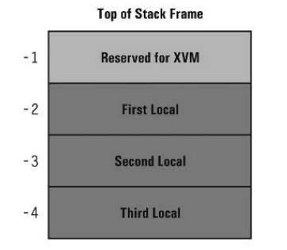
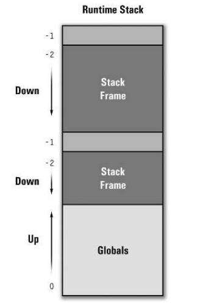
变量的解析：
case TOKEN_TYPE_VAR:
{
// Get the variable's identifier
if ( GetNextToken () != TOKEN_TYPE_IDENT )
ExitOnCodeError ( ERROR_MSSG_IDENT_EXPECTED );
char pstrIdent [ MAX_IDENT_SIZE ];
strcpy ( pstrIdent, GetCurrLexeme () );
// This version of the code only handles single variables
int iSize = 1;
// Determine the variable's index into the stack
// If the variable is local, then its stack index is always the local data
// size + 2 subtracted from zero
int iStackIndex;
if ( iIsFuncActive )
iStackIndex = -( iCurrFuncLocalDataSize + 2 );
// Otherwise it's global, so it's equal to the current global data size
else
iStackIndex = g_ScriptHeader.iGlobalDataSize;
// Attempt to add the symbol to the table
if ( AddSymbol ( pstrIdent, iSize, iStackIndex, iCurrFuncIndex ) == -1 )
ExitOnCodeError ( ERROR_MSSG_IDENT_REDEFINITION );
// Depending on the scope, increment either the local or global data size
// by the size of the variable
if ( iIsFuncActive )
iCurrFuncLocalDataSize += iSize;
else
g_ScriptHeader.iGlobalDataSize += iSize;
break;
}数组的格式如下：
Var MyArray[1024]其对应的 Token 序列为：
TOKEN_TYPE_VAR, TOKEN_TYPE_IDENT, TOKEN_TYPE_OPEN_BRACE, TOKEN_TYPE_INT, TOKEN_TYPE_CLOSE_BRACE
代码如下：
case TOKEN_TYPE_VAR:
{
// Get the variable's identifier
if ( GetNextToken () != TOKEN_TYPE_IDENT )
ExitOnCodeError ( ERROR_MSSG_IDENT_EXPECTED );
char pstrIdent [ MAX_IDENT_SIZE ];
strcpy ( pstrIdent, GetCurrLexeme () );
// Now determine its size by finding out if it's an array or not, otherwise
// default to 1.
int iSize = 1;
// Find out if an opening bracket lies ahead
if ( GetLookAheadChar () == '[' )
{
// Validate and consume the opening bracket
if ( GetNextToken () != TOKEN_TYPE_OPEN_BRACKET )
ExitOnCharExpectedError ( '[' );
// We're parsing an array, so the next lexeme should be an integer
// describing the array's size
if ( GetNextToken () != TOKEN_TYPE_INT )
ExitOnCodeError ( ERROR_MSSG_INVALID_ARRAY_SIZE );
// Convert the size lexeme to an integer value
iSize = atoi ( GetCurrLexeme () );
// Make sure the size is valid, in that it's greater than zero
if ( iSize <= 0 )
ExitOnCodeError ( ERROR_MSSG_INVALID_ARRAY_SIZE );
// Make sure the closing bracket is present as well
if ( GetNextToken () != TOKEN_TYPE_CLOSE_BRACKET )
ExitOnCharExpectedError ( ']' );
}
// Determine the variable's index into the stack
// If the variable is local, then its stack index is always the local data
// size + 2 subtracted from zero
int iStackIndex;
if ( iIsFuncActive )
iStackIndex = -( iCurrFuncLocalDataSize + 2 );
// Otherwise it's global, so it's equal to the current global data size
else
iStackIndex = g_ScriptHeader.iGlobalDataSize;
// Attempt to add the symbol to the table
if ( AddSymbol ( pstrIdent, iSize, iStackIndex, iCurrFuncIndex ) == -1 )
ExitOnCodeError ( ERROR_MSSG_IDENT_REDEFINITION );
// Depending on the scope, increment either the local or global data size
// by the size of the variable
if ( iIsFuncActive )
iCurrFuncLocalDataSize += iSize;
else
g_ScriptHeader.iGlobalDataSize += iSize;
break;
}注意变量作用域是本地还是全局，以及变量栈索引的计算
Param
根据栈帧的分配，函数参数的位置如下：
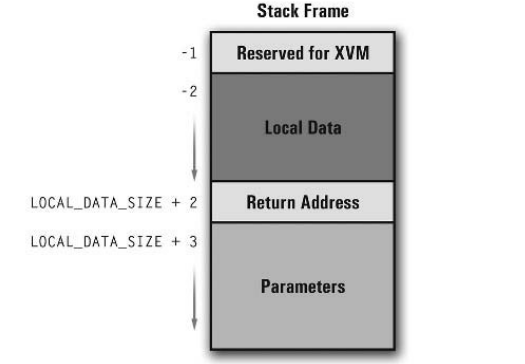
参数格式为 Param Y ， Token 序列为 TOKEN_TYPE_PARAM, TOKEN_TYPE_IDENT
代码如下：
case TOKEN_TYPE_PARAM:
{
// Read the next token to get the identifier
if ( GetNextToken () != TOKEN_TYPE_IDENT )
ExitOnCodeError ( ERROR_MSSG_IDENT_EXPECTED );
// Read the identifier, which is the current lexeme
char * pstrIdent = GetCurrLexeme ();
// Calculate the parameter's stack index
int iStackIndex = -( pCurrFunc->iLocalDataSize + 2 +
( iCurrFuncParamCount + 1 ) );
// Add the parameter to the symbol table
if ( AddSymbol ( pstrIdent, 1, iStackIndex, iCurrFuncIndex ) == -1 )
ExitOnCodeError ( ERROR_MSSG_IDENT_REDEFINITION );
// Increment the current parameter count
++ iCurrFuncParamCount;
break;
}Line Labels
标签格式 MyLabel: 其 Token 序列为 TOKEN_TYPE_IDENT TOKEN_TYPE_COLON
代码如下：
case TOKEN_TYPE_IDENT:
{
// Make sure it's a line label
if ( GetLookAheadChar () != ':' )
ExitOnCodeError ( ERROR_MSSG_INVALID_INSTR );
// Make sure we're in a function, since labels can only appear there
if ( ! iIsFuncActive )
ExitOnCodeError ( ERROR_MSSG_GLOBAL_LINE_LABEL );
// The current lexeme is the label's identifier
char * pstrIdent = GetCurrLexeme ();
// The target instruction is always the value of the current
// instruction count, which is the current size - 1
int iTargetIndex = g_iInstrStreamSize - 1;
// Save the label's function index as well
int iFuncIndex = iCurrFuncIndex;
// Try adding the label to the label table, and print an error if it
// already exists
if ( AddLabel ( pstrIdent, iTargetIndex, iFuncIndex ) == -1 )
ExitOnCodeError ( ERROR_MSSG_LINE_LABEL_REDEFINITION );
break;
}注意标签代表的指令为 g_iInstrStreamSize - 1
Instructions
在解析指令是只需要根据指令查找表，逐一比对当前 Token 和 当前指令的各个部分即可。指令查找表中每一条指令包含以下内容：
- 指令助记符
- 操作码
- 操作数数量
- 操作数
操作符字段掩码如下：
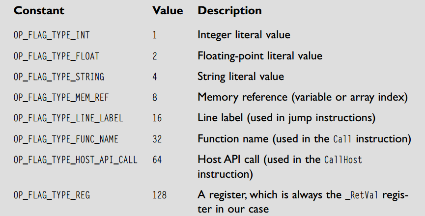
在解析的过程中，首先判断 Token 类型，然后验证是否和当前操作符类型一致，整型、浮点数和 _RetVal 相对简单，而 TOKEN_TYPE_IDENT 可能对应以下几种操作符：
- Variables/Array Indices
- Line Labels
- Function Names
- Host API Calls
具体哪种类型需要根据下一个 Token 判断。
构建 .XSE 可执行文件
Header
按照顺序将 Header 写入文件中。
指令流
写入指令流的步骤如下：
- 写入指令数量
- 循环每个指令，写入操作码和操作数数量
- 循环操作数数组，写入操作数类型和操作数数据
String Table,Function Table and Host Api Table
直接写入对应表格中的数据即可。
汇编过程
加载源文件
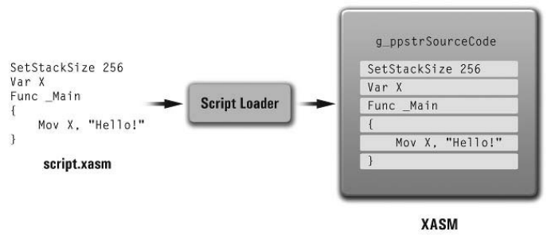
First Pass
由于跳转指令是标签时，存在向前引用问题，所以汇编过程采用两阶段汇编。第一阶段主要构建 Label Table,Function Table 和 Sysmbol Table。
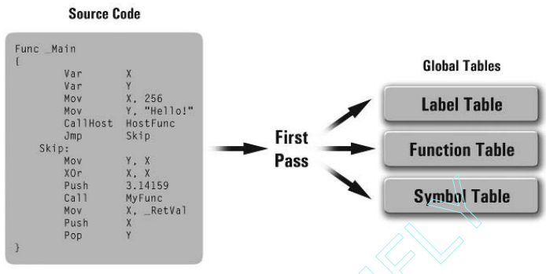
Second Pass
第二阶段主要是解析指令。
生成可执行文件 .XSE
本阶段将前面搜集的各种数据结构以二进制格式写入执行文件中。
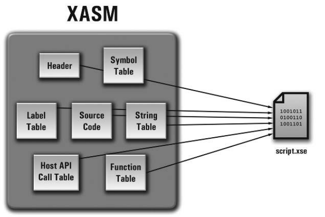